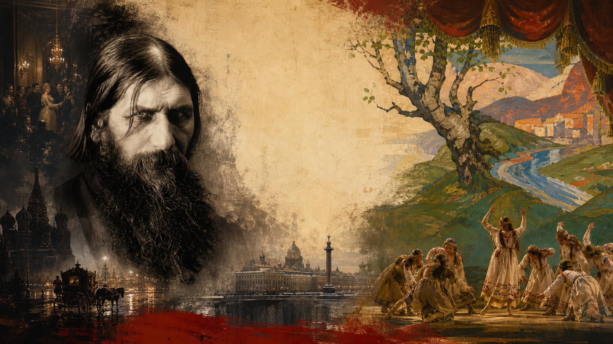
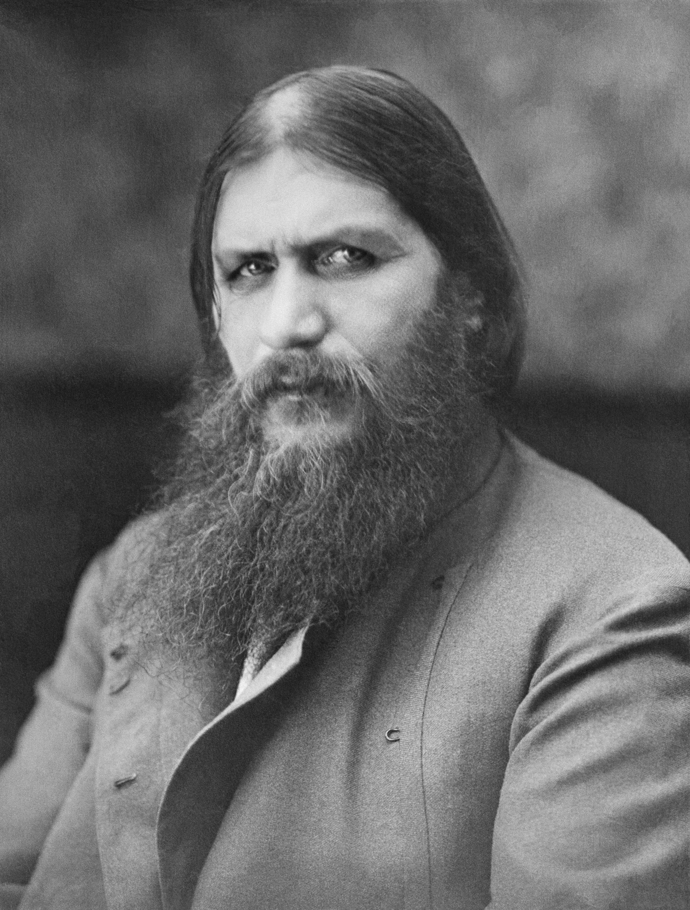
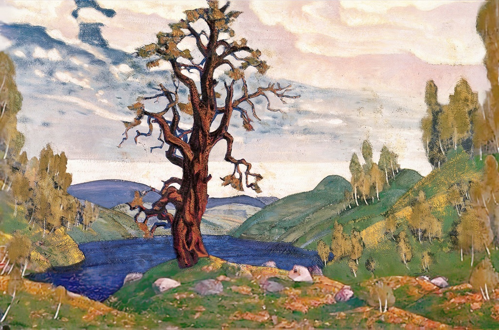

历史小故事
妖僧、春祭与帝国的最后节拍

拉斯普丁这个名字，像是从一条冬夜的河里浮上来的。
人们很容易先看见那些黑暗的东西：长发、胡须、盯人的眼神，宫廷里的流言，毒酒、枪声，还有冰冷的河水。可是在那一夜之前，他已经在俄国走了很长一段路。
1913 年，罗曼诺夫王朝正在庆祝统治俄国三百周年。街上有钟声、旗帜和制服，宫廷深处却藏着皇太子的病、皇后的焦虑，以及越来越多关于拉斯普丁的耳语。
同一年，巴黎香榭丽舍剧院里，低音管吹出奇怪的高音，舞者弯着膝盖，脚步重重踩进地面。斯特拉文斯基的《春之祭》第一次响起来，春天不再柔软，像某种被叫醒的力量。
宫廷走廊里有人压低声音谈病，巴黎剧场里有人喝彩、嘲笑、跺脚。圣像前的灯还亮着，舞台上的节拍已经砸下来。几年之后，战争和革命来了，这些原本分散的声音，听起来就不再那么远。
一、从西伯利亚来的“神人”

先不要看河水，也不要看毒酒。
先看一个从西伯利亚来的男人，站在圣彼得堡一间客厅的门口。
门开了。屋里有灯，有茶杯，有女人的裙摆，有军官和神职人员压低的声音。进来的人个子不算特别高，肩膀结实，胡子浓，头发贴着脸垂下来。衣服不合城里的规矩，靴子像走过很远的路。他没有勋章。没有官职。没有一本可以拿出来证明自己的书。
最让人记住的，是他的眼睛。后来很多回忆都爱写那双眼睛，好像它们能把人钉住。也许这是传说给他的补光；也许那天屋里的人真的被他看得不舒服。总之，一个乡下男人站在贵族客厅里，眼神不躲，手又大又粗，指节像常年碰过木头、泥土和缰绳。
他坐下。别人递给他茶。他用那双手接过去。有人盯着他的靴子，有人盯着他的眼睛。他不急着讨好谁。他说话不长，有时很直，有时像乡下人讲一个听来的故事。房间里的人听着。有人皱眉。有人靠近一点。
他会画十字。会祈祷。会把手放在胸前，闭一会儿眼。有人问他病，有人问他命运，有人只想看看这个人是不是传闻里说的那样。他不表演什么大法术。他只是坐在那里，说几句简单的话，像把一个吵闹的房间按低了一点。
这个人来自托博尔斯克省的波克罗夫斯科耶村。那里离宫殿很远。年轻时的拉斯普丁结婚，有孩子，也有乡村生活里粗粝的一面。他不是一开始就像圣徒画像里的人。他种过地，赶过路，也有被人议论的坏名声。
后来，他一次次离家。路上有修道院，有村镇，有烛火，有泥路。他听神父说话，也给别人讲自己的神秘经验。俄语里有一种词叫“strannik”，在路上的朝圣人。拉斯普丁更像这种人，不像正式僧侣。他的力量不在制度里，而在路上，在传闻里，在人们愿意相信的那一刻里。
他到圣彼得堡以后，事情不是一下子发生的。先是喀山和教会人士那里有人记住他。然后是神学院、修道院、贵族客厅。有人写介绍信。有人把他带到下一间屋子。几位热衷神秘主义的贵族女性也注意到他，其中包括和罗曼诺夫家族有亲戚关系的黑山公主姐妹。
就是这样，一扇门接一扇门地开。
拉斯普丁不是突然出现在沙皇面前的。他先被人谈起，再被人带去，然后被人转介绍。每到一处，他做的事都差不多：坐下，说话，祈祷，看着对方的脸，让别人相信他听得见某些更深的东西。
1905 年 11 月，尼古拉二世第一次见到他。沙皇在日记里只写了很短一笔，大意是他和皇后认识了一个来自托博尔斯克省的“神人”格里戈里。字很少。没有雷声。没有预言。只有一个乡下宗教人，终于坐到了皇室夫妇面前。
真正让他留下来的，是病房。
亚历山德拉皇后的儿子阿列克谢患有血友病。孩子一出血，房间就安静下来。医生低声说话。门开了又关。毛巾、药瓶、被单、烛台，都像突然变得很重。皇后等在旁边，脸色很白。公开病情会动摇王朝的未来，不公开又不能让疼痛消失。
拉斯普丁来到床边。他不做手术。他没有药箱。他祈祷，低声说话，让周围的人安静一点。他有时只是叫人别慌。有时叫人别再折腾孩子。有时他说，孩子会好。
这样的动作太小了。小到不像政治。可是宫廷里很多事，正是从这样小的动作开始变大的。孩子不再哭得那么厉害。皇后的呼吸慢下来。医生退到一边。屋子里的人记住了：这个男人来了以后，房间安静过。
1912 年，阿列克谢在波兰的斯帕拉猎苑附近病情严重。皇后几乎崩溃。拉斯普丁不在身边，只从远处回了一封电报。话很简单：孩子会活下来，不要让医生太多打扰他。
后来孩子的情况缓和了。休息、药物、情绪安定，也许都在起作用。可在亚历山德拉心里，那封电报已经带着神迹的光。纸上的几行字，比大臣的报告更有分量。
从那以后，拉斯普丁不需要坐上任何正式位置。他只要能走进病房，只要能让皇后听他说话，就已经足够。
后来，另一种人也开始来找他。有人求职位。有人想保住职位。有人想把敌人从宫廷边上推开。有人递纸条，有人托人带话，有人只是想让自己的名字被皇后听见。拉斯普丁不批文件。他也不用坐在办公桌后面。他只是把名字递进某些耳朵里。
皇后看见的是救过儿子的人。贵族看见的是一个进出宫廷的乡下人。官员看见的是一条没有写在制度里的通道。报纸和流言看见的，则是酒、女人、钱和羞耻。
圣人、骗子、救命稻草、腐烂气味，这些称呼慢慢叠在他身上。到后来，“妖僧”这个形象变得很牢。每个人都在他身上看见了一点自己害怕的东西。
二、钟声里的三百周年
1913 年，罗曼诺夫王朝庆祝统治俄国三百周年。
教堂里有钟声，街上有巡游。军官的制服、神父的法衣、圣像和旗帜一起出现在人群中。沙皇一家沿着仪式路线走过，周围的人行礼、欢呼，仿佛这个家族从 1613 年一路走来，还可以继续走下去。
可是 1905 年革命留下的声音并没有完全散去。工人罢工、农民骚动、民族问题、日俄战争的失败、杜马的争执，都还压在帝国的地板下面。尼古拉二世仍然相信自己的权力来自上帝，仍然不愿真正放弃专制的核心。
仪式结束后，宫殿的门会关上。皇太子的病还在，朝廷里的不信任还在。钟声停下来，走廊里的耳语又回来了。
也是这一年，巴黎的舞台上，另一种俄罗斯开始被灯光照亮。
三、佳吉列夫带到巴黎的俄罗斯
谢尔盖·佳吉列夫不是沙皇的大臣。他没有军队，也没有官署。他有的是剧院、海报、排练厅和一张能把人聚到一起的名单。
他创办的芭蕾俄罗斯，把俄国舞者、作曲家、画家、服装和民间传说带到欧洲舞台上。巴黎观众看到的，不是俄国乡村真实的泥土，也不是圣彼得堡官署里的公文，而是被灯光和布景重新调制过的俄罗斯：浓烈的颜色，沉重的身体，民间传说，东方感，还有现代主义的锋利边缘。
圣彼得堡喜欢把俄罗斯摆成正教、沙皇、祖国和秩序；巴黎看到的却是颜色、身体、节奏和梦。这个俄罗斯不太温顺，也不太像宫廷愿意承认的模样。
斯特拉文斯基也是在这样的系统里，被推到欧洲观众面前的。
《火鸟》让他在巴黎一举受人注意，《彼得鲁什卡》继续把他和芭蕾俄罗斯绑在一起。到了《春之祭》，事情变得更猛烈了。这个作品原本不是要讲一个温柔的春天，而是要想象“异教俄罗斯”的仪式：大地苏醒，部族聚集，被选中的少女跳舞，直到献祭完成。
春天在这里不是花开，不是散步，不是柔软的绿意。
春天是一种要付出代价的力量。
四、春之祭：一场不温柔的春天
《春之祭》不是一个人坐在房间里想出来的。
佳吉列夫在旁边组织，尼金斯基排练舞步，尼古拉·罗里赫参与构想，并设计布景和服装。罗里赫画画，也迷恋考古、古代仪式和神秘主义。舞台上那层“古老俄罗斯”的外壳，有很大一部分来自他的手。

1913 年 5 月 29 日，《春之祭》在巴黎香榭丽舍剧院首演。剧院很新，观众坐在灯光和包厢之间，原本等着看一场来自芭蕾俄罗斯的新奇节目。可音乐一出来，气氛很快变了。
后来，人们喜欢把那一晚叫成“首演暴动”。这个说法很有戏剧性，也抓住了当晚的混乱。可剧场里的混乱并不是一声令下的反对，更像是座位之间突然裂开了缝。
有人觉得这是天才，有人觉得这是冒犯。有人喝彩，有人嘲笑，有人抗议，有人只是被周围的骚动卷进去。舞台上的舞者弯着膝盖、踩着沉重的步子，脚尖不再轻盈地向外打开，身体也不再追求古典芭蕾那种漂亮的上升感。乐队里的节奏一下一下砸出来，观众席的声音也跟着涨起来，舞台上的人甚至很难听清乐池。
它像是故意把观众从座位上推起来。
它表面上在召唤远古，声音和动作却属于一个很新的世纪。音乐、身体和舞台一起压过来，观众很难只把它当成一场优雅的芭蕾。
刺人的地方慢慢露出来。过去很多观众习惯了旋律带路、舞者上升、脚尖轻盈、身体线条漂亮。《春之祭》偏偏把重心往下压：膝盖弯着，脚步踩进地面，群舞像一块一起移动的土，身体不再只是优雅的装饰，而像仪式本身的一部分。
音乐也不再只是托住舞蹈的背景。节奏变成主角，重音像不断挪位置的石头，管弦乐有时不像在歌唱，更像在撞击。那一晚以后，很多人再听音乐、再看芭蕾，耳朵和眼睛都很难回到原来的位置。
从那以后，仙女、王子和轻盈的身体不再占满芭蕾的全部想象。音乐也可以不安、粗粝、重复、断裂，让听众失去舒适的方向感。那天晚上被冒犯的不只是耳朵，还有一整套关于艺术应该怎样漂亮的习惯。
很多年后，荣格会用“集体无意识”和“原型”这样的词，谈人类反复梦见、反复讲述的图像：献祭、春天、圣人、妖魔、被选中的人。这个词像一盏侧灯，照到 1913 年那些旧图像上。
拉斯普丁身上也有几层影子。
先是“圣徒”的影子。1905 年，尼古拉二世在日记里记下自己和皇后认识了来自托博尔斯克省的格里戈里。那时候的拉斯普丁还不是公众想象里的恶魔，而是一个被贵族客厅和宗教圈层层介绍来的朝圣者，身上带着乡野、祈祷和神秘经验的气味。
接着是“能治病的老人”的影子。阿列克谢出血、疼痛、发热，医生没有把握，皇后几乎崩溃；拉斯普丁来祈祷，或者从远处发来电报，说孩子不会死，也不要让医生太多打扰。后来孩子情况缓和，这件事在皇后心里就不再只是巧合，而像是救命。
他又像“骗子”。圣彼得堡的流言说他喝酒、收礼、和女信徒关系暧昧，也有人把求官、保官、做生意的希望绕到他那里。很多传闻未必能逐条坐实，可它们一起贴上来，那个说自己接近上帝的人，也沾上了权力和欲望的气味。
白天看，他可能只是一个没有正式头衔的宗教人物；夜里看，他又像一条通往皇后、病房、任命和丑闻的暗道。《春之祭》则把另一组古老图像搬到舞台上：部族、土地、少女、牺牲、复活的季节。它们不属于同一个故事，却都让现代城市里的观众碰到一些更旧的东西。
延伸观看
《春之祭》最好还是听一段。它的冲击力不只在“故事很野”，更在节奏、重音和音色本身，让人真的感觉舞台地面在往上顶。
五、战争来了，耳语变成风暴
1914 年，战争来了。
前线要士兵、武器和补给，后方要粮食、交通和信任。火车站、军营、面包队伍、部长办公室，每一个地方都开始催促这个庞大的帝国更快运转。可它本来就已经迟缓。
战争爆发前后，拉斯普丁自己的故事也变得更像传说。1914 年，他在家乡波克罗夫斯科耶被一名女子刺伤，差点死去。一个本来已经被说成神秘人物的人，经历了这样的遇刺和恢复，名声只会更加难以落回普通人的尺寸：他的敌人更恨他，信他的人也更容易相信他身上有某种命数。
1915 年，尼古拉二世决定亲自前往前线，担任军队最高统帅。从那一刻起，胜败更直接地落到沙皇身上。亚历山德拉皇后留在后方，拉斯普丁围绕宫廷的影响传言也变得越来越刺耳。
拉斯普丁没有公开发布命令。他的影子常常藏在信里。皇后给前线的沙皇写信时，会提到“我们的朋友”怎么看某个人、某个决定、某个大臣。外面的人听不到原话，却能看到内阁频繁换人，官员彼此猜疑，谁都不知道下一个被推荐或被厌恶的名字，会不会已经出现在皇后的信里。
拉斯普丁亲自决定了多少政治事务，谁也很难一条条说清。彼得格勒街头却已经不等证据齐全。有人在报纸上读到他的名字，有人在餐桌边听到他的名字，有人在大臣更替后又想起他的名字。流言长出新的枝杈。
他仍然是一个真实的人，有自己的经历、欲望、语言和关系。后来，他也变成了一面屏幕。贵族、军官、议员、城市居民、反对派，都把对王朝的不满投到他身上。旧制度的病很复杂，而拉斯普丁让那种病有了一张脸。
借一点拉康的说法，这个名字已经占住了一个位置。到 1916 年前后，“拉斯普丁”不再只是拉斯普丁本人。人们把皇后、沙皇、性、信仰、外国影响和国家羞耻，都塞进这个名字里。许多原本难以直接说出口的东西，绕到它上面，反而说得更响了。
等到 20 世纪后半叶，这个名字又换了一件衣服。历史人物本人已经够复杂，围绕他的传言又太多：圣人、骗子、情人、阴谋家、死不掉的怪人。它们被重新剪成更轻快、更夸张的版本，甚至可以跟着迪斯科节拍跳起来。
Boney M 的《Rasputin》就是这种二次生命。这个前西德迪斯科组合在 70 到 80 年代很红，《Rivers of Babylon》《Brown Girl in the Ring》都是他们的代表作。《Rasputin》不像一堂俄国史课，更像一张彩色海报：拉斯普丁被唱成宫廷里的危险人物、女人迷和传奇怪客。历史被压扁、加速、加上鼓点，变成了另一种大众记忆。
这首歌像是把镜头忽然拉到很远的后来。宫廷、病房和谋杀夜都退远了，舞台灯光亮起来，鼓点响起来。拉斯普丁这个名字离开档案，离开俄国，进入舞池、电视和网络视频。
延伸观看
这段 1979 年 Sopot Festival 现场版很适合作为“历史人物变成流行符号”的旁证。看舞台、服装和节奏，会比单纯读歌词更直观。
六、妖僧之死，王朝之春
1916 年 12 月，拉斯普丁终于被一群贵族和保守派阴谋者盯上了。
地点在彼得格勒莫伊卡河畔的尤苏波夫宫。冬夜很长，河水结着冷意，宫里却像要举行一场私密的晚宴。年轻的费利克斯·尤苏波夫把拉斯普丁请来，理由说得暧昧又诱人；楼上有人等着，楼下也有人等着，只是等的不是同一件事。
最著名的版本说，拉斯普丁被带到地下室，桌上有酒和点心，里面放了毒。可是他吃了，喝了，似乎没有倒下。这个画面太适合传奇了：一个被称为“妖僧”的人，在谋杀现场慢慢咽下毒物，仍然坐在那里，像是连死亡都暂时找不到入口。
接下来的故事越讲越像恐怖小说。枪响了，他倒下；过了一会儿，他又像还没死透一样挣扎、逃出门去；后来又有枪声；尸体被处理，最后和冰冷的水联系在一起。毒酒、枪击、挣扎、河水，这些元素一旦进入叙事，就很难再被赶出去。
可是验尸报告和回忆录并不总站在同一边。毒是否真的有效，他是否真的像传说中那样一次次“复活”，都要打上问号。比较谨慎的说法是，拉斯普丁很可能主要死于枪伤。
刺杀者却需要这个夜晚足够像传奇。他们不是只想杀死一个叫格里戈里的男人，还想杀死一个符号：那个贴在皇后身边的名字，那个让贵族觉得国家被羞辱的名字，那个让他们相信王朝还可以被“清理干净”的名字。
他们以为除掉拉斯普丁，就能替君主制止血。可血已经不只从一个地方流出来了。
几周之后，俄国进入 1917 年。按俄国当时使用的旧历，人们后来把那场推翻沙皇制度的革命叫作“二月革命”；按今天常用的公历，它发生在 3 月。彼得格勒的罢工、粮食危机、士兵倒戈和政治失控迅速连在一起。尼古拉二世退位，罗曼诺夫王朝结束。
再听《春之祭》，那种不温柔的春天会让人停一下。斯特拉文斯基并不是在写俄国革命；只是 1913 年舞台上的祭仪，和 1917 年现实里的崩塌，后来被历史放得很近。宫廷里很低的祈祷声、巴黎剧院里的起哄声、街头越来越急的脚步声，几年之间挤到了一起。
七、余波：巴黎客厅里的旧俄国
1917 年以后，宫殿里的故事变了模样。沙皇退位，拉斯普丁已经死去，那个把自己想象成神圣家族的旧王朝结束了。
人没有跟着制度一起整齐地消失。革命和战争之后，许多俄国艺术家留在欧洲，斯特拉文斯基也长期远离故乡。几年后，他出现在巴黎的另一个房间里：不是宫殿，也不是 1913 年那个闹哄哄的剧院，而是香奈儿的住处。
1920 年前后，香奈儿把斯特拉文斯基一家接到自己在巴黎近郊的住处暂住。后来小说和电影给这段关系添上爱情故事的味道。我们先只看那个房间：钢琴、手稿、孩子的动静、来往的艺术圈朋友，还有一个刚刚离开旧俄国不久的作曲家，暂时坐在巴黎时装设计师的屋檐下。
香奈儿和佳吉列夫的芭蕾俄罗斯圈子也有往来，后来还参与过芭蕾作品《蓝色列车》的服装设计。到这个时候，“俄罗斯”已经不只在圣像、军装和民间祭仪里出现，也会出现在巴黎客厅、海滨运动装和现代时尚的线条里。
旧俄国的政治世界结束得很突然。可那些声音没有立刻停下，它们绕了一段路，继续在巴黎的客厅、舞台和衣料的线条里发声。
参考资料
1. Encyclopaedia Britannica: Grigori Rasputin
2. Encyclopaedia Britannica: Igor Stravinsky
3. Encyclopaedia Britannica: The Rite of Spring
4. Victoria and Albert Museum: Diaghilev and the Ballets Russes
5. Wikipedia: Coco Chanel & Igor Stravinsky
6. Wikipedia: Collective unconscious
7. Wikipedia: Jungian archetypes